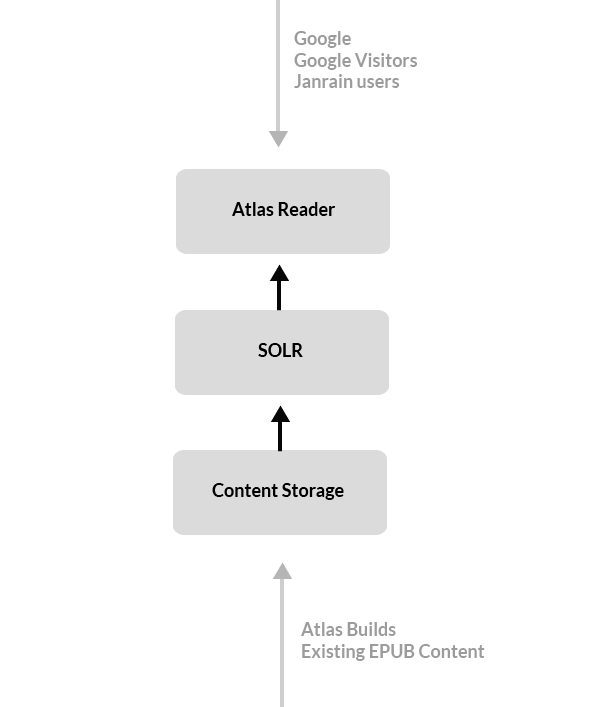

This document describes the business requirements documents for the “Atlas Reader” project. The key elements in the system are:
Content Storage. A central storage location for content that will be served by the Atlas Reader or Full Content Search. We will store only HTML build output from Atlas or EPUB.
SOLR. An index layer that will provide an index and API into the Content Storage layer.
Atlas Reader. The gateway app that serves content from the CCS. The reader can display either HTMLBook (HTML5) or EPUB (to support partner publisher who do not use HTMLBook or Atlas). It also provides gated access to both search crawlers (vis a whitelist) and users (based on the Ownership Service or our Preview Rules).
The following figure illustrates the relationship among these and other elements:

Key components of the Atlas reader and full content search.